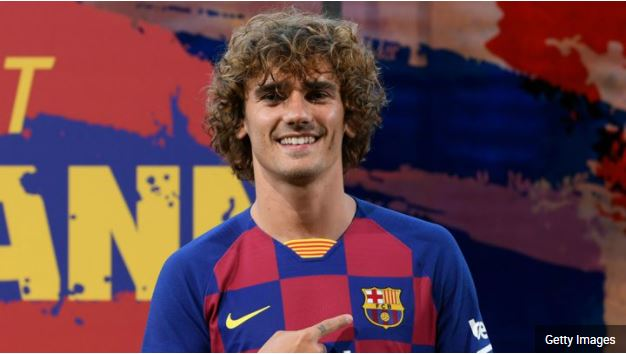
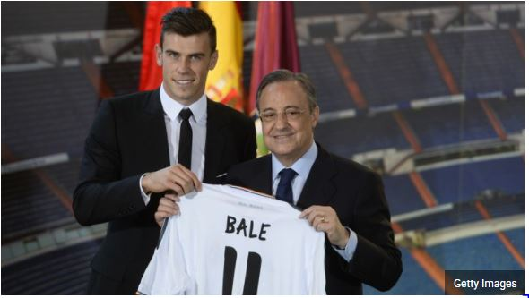
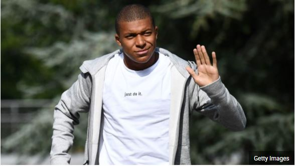
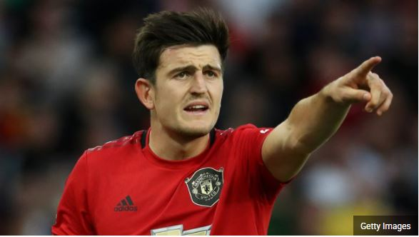
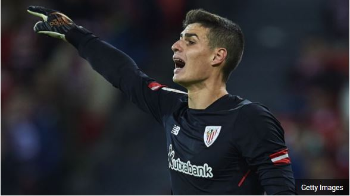
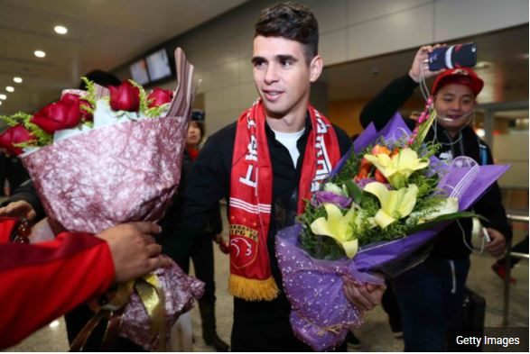

10/05/2020
The 100 most expensive football transfers of all time

Neymar completed his move from Barcelona to Paris Saint-Germain for a staggering fee of €222 million in the summer of 2017 and the big deals haven't stopped since, with Kylian Mbappe joining him in Paris for €145m plus €35m in bonuses.
As a result of his move to the French capital, the Brazilian is now the most expensive player of all time, having smashed the previous record held by Manchester United's Paul Pogba, who arrived at Old Trafford in 2016 from Juventus for €105m. Mbappe, meanwhile, moves to second on the list.
Atletico Madrid's massive outlay for Benfica's Joao Felix of €126m in July of 2019 makes the Portuguese star the third highest on our list.
Philippe Coutinho's move from Liverpool to Barcelona in January 2018 puts him now fourth, while Barca's captures of France duo Antoine Griezmann and Ousmane Dembele from Atletico Madrid and Borussia Dortmund respectively sees them ahead of Pogba.
Eden Hazard's move to Real Madrid from Chelsea for €100m plus add-ons puts him joint-tied for ninth. Cristiano Ronaldo occupies positions nine and 11 on the list, with his move to Juventus in the summer of 2018 eclipsing the cost of his transfer to Real Madrid from Manchester United nine years earlier.
You can see the full list of the world's most expensive footballers below.
- Most expensive British player
- Most expensive teenager
- Most expensive defender
- Most expensive goalkeeper
- Biggest transfer outside of Europe
| Pos. | Player | Clubs | Year | Fee |
|---|---|---|---|---|
| 1 | Neymar | Barcelona - PSG | 2017 | €222m |
| 2 | Kylian Mbappe | Monaco - PSG | 2017 | €145m (+€35m) |
| 3 | Joao Felix | Benfica - Atletico Madrid | 2019 | €126m |
| 4 | Philippe Coutinho | Liverpool - Barcelona | 2018 | €120m (+€40m) |
| 5 | Antoine Griezmann | Atletico Madrid - Barcelona | 2019 | €120m |
| 6 | Ousmane Dembele | Borussia Dortmund - Barcelona | 2017 | €105m (+€45m) |
| 7 | Paul Pogba | Juventus - Manchester United | 2016 | €105m |
| 8 | Gareth Bale | Tottenham - Real Madrid | 2013 | €100.8m |
| 9 | Cristiano Ronaldo | Real Madrid - Juventus | 2018 | €100m |
| 10 | Eden Hazard | Chelsea - Real Madrid | 2019 | €100m (+€40m) |
| 11 | Cristiano Ronaldo | Manchester United - Real Madrid | 2009 | €94m |
| 12 | Gonzalo Higuain | Napoli - Juventus | 2016 | €90m |
| 13 | Harry Maguire | Leicester City - Manchester United | 2019 | €87.1m |
| 14 | Neymar | Santos - Barcelona | 2013 | €86.2m |
| 15 | Romelu Lukaku | Everton - Manchester United | 2017 | €84.8m |
| 16 | Virgil van Dijk | Southampton - Liverpool | 2018 | €84.5m |
| 17 | Luis Suarez | Liverpool - Barcelona | 2014 | €82.3m |
| 18 | James Rodriguez | Monaco - Real Madrid | 2014 | €80m |
| 19 | Kepa Arrizabalaga | Athletic Club - Chelsea | 2018 | €80m |
| 20 | Lucas Hernandez | Atletico Madrid - Bayern Munich | 2019 | €80m |
Most expensive British player
Gareth Bale is the most expensive British player of all time, having cost Real Madrid €100.8 million in 2013.
At the time, Bale was the most expensive player in history, but he slipped to eighth in the ranking in 2019. He is now behind the likes of Paul Pogba, Antoine Griezmann and Philippe Coutinho.
The costliest English player in history, incidentally, is Manchester United defender Harry Maguire, who joined from Leicester City in 2019 for €87.1m.
Most expensive teenager
Kylian Mbappe is the most expensive teenager ever after joining PSG on a loan-to-buy deal that will be worth €180 million after bonuses.
Not only is he the most expensive teenage footballer of all time, but Mbappe is also second-most expensive player of all time.
Joao Felix follows Mbappe as the second most expensive teenager, having been signed by Atletico Madrid from Benfica for €126m in 2019.
Most expensive defender
Harry Maguire became the most expensive defender of all time when Manchester United forked out a fee worth €87.1 million to Leicester City for the England international's services in 2019.
Maguire overtook Liverpool defender Virgil van Dijk in the process, but only relatively marginally, with the Netherlands centre-back costing the Reds €84.5m
Most expensive goalkeeper
Kepa Arrizabalaga is the most expensive goalkeeper in history after Chelsea spent €80 million to meet his release clause with Athletic Club in 2018.
For a long time, former Juventus captain Gianluigi Buffon held this mark having joined the Turin outfit from Parma for €52m, which is a colossal fee when inflation is taken into account.
Then within a matter of weeks, the record was shattered twice. First Liverpool brought in Roma's Alisson Becker for €73m, to temporarily take the mark as the world's most expensive keeper.
Not to be outdone, Chelsea matched Kepa's release clause not even a month later, meaning the Spain international has quickly dethroned Alisson for the No.1 spot in transfer history.
Biggest transfer outside of Europe
The most a non-European club has ever paid for a player is €60.3m, which Shanghai SIPG handed over to Chelsea for Brazil midfielder Oscar in 2016.
However, with the way the market is going, who knows which record will be shattered next?